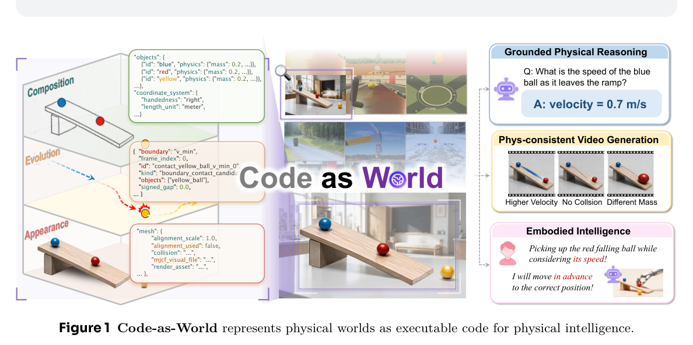
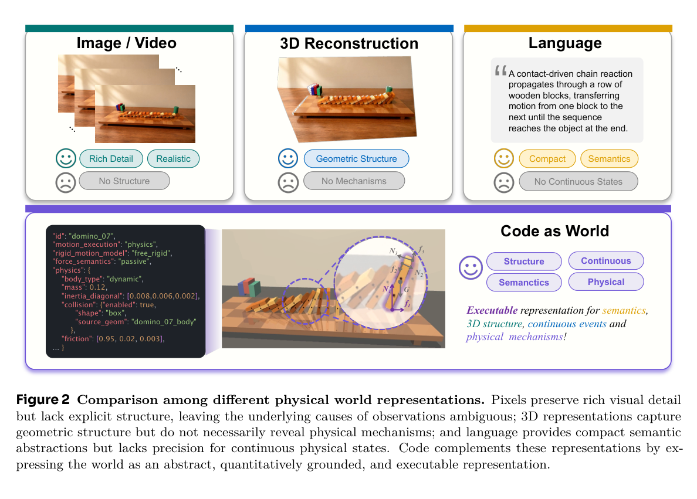
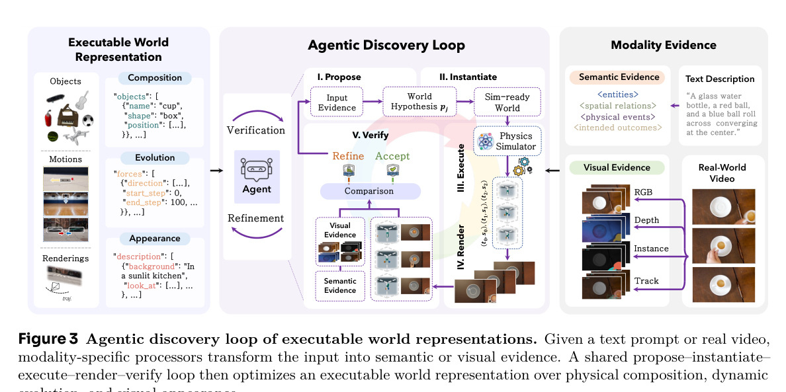
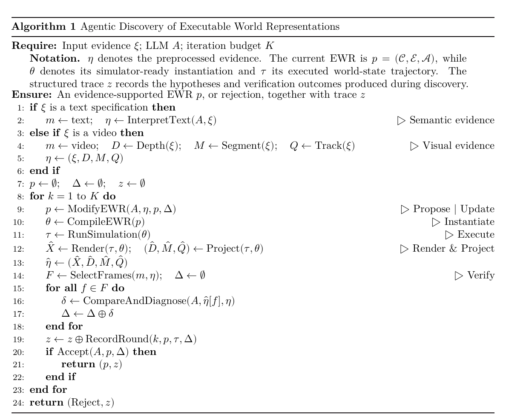
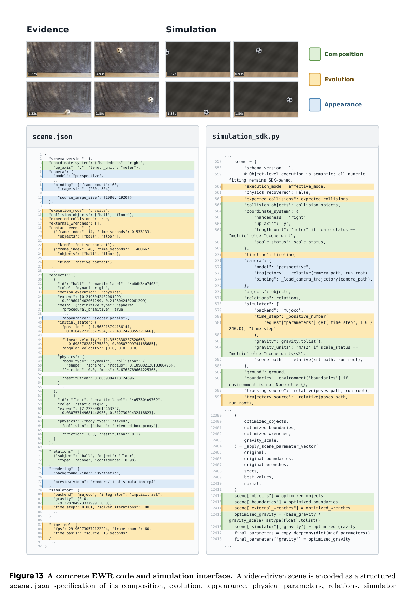
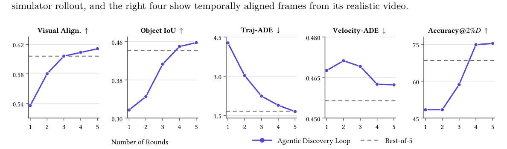
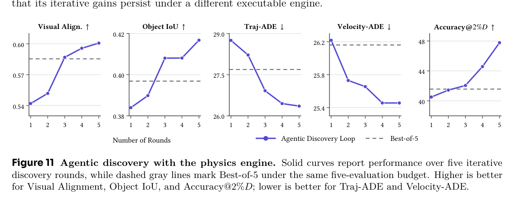
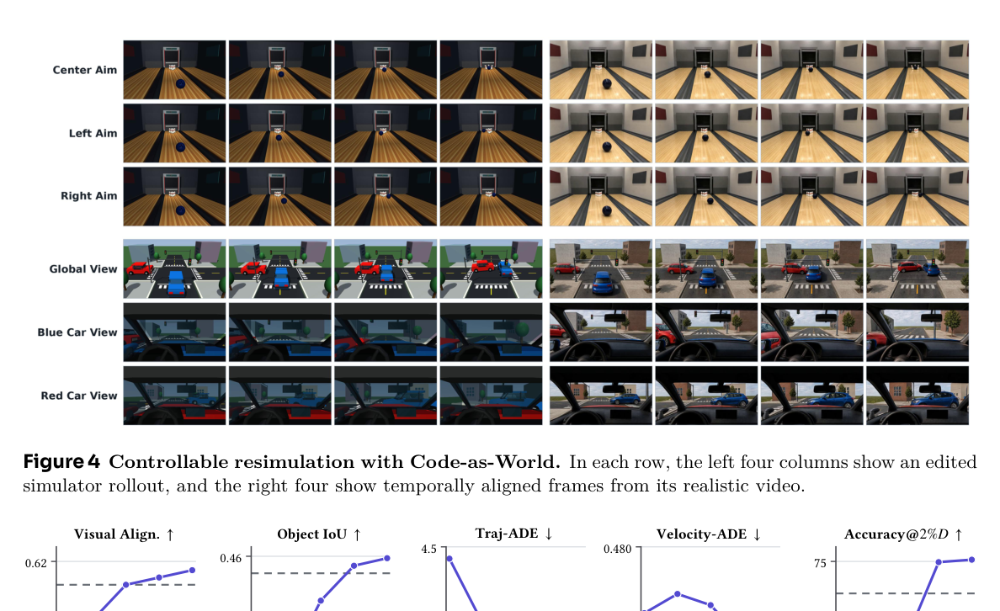

📑 本文目录
1 · 总览:世界即代码
这篇技术报告试图回答一个 world model 领域的老问题:用什么表示物理世界,才能既精确又可规模化地监督模型? 它给出的答案是「代码」——不是描述世界的文本,而是能在物理仿真器里真正跑起来的可执行世界表示(EWR)。 每个 EWR 都是对一个物理场景的完整假设:有什么物体、遵循什么动力学、看起来什么样。它能被 MuJoCo 执行出显式的状态轨迹, 于是物体尺寸、位移、速度、加速度这些定量监督信号,可以直接从验证过的世界里「读」出来,而不需要给真实视频标注物理量。
整套系统分三层:表示层定义 EWR 这个「合法可执行世界空间」;发现层用一个 LLM agent 在仿真器环境里迭代地提出、执行、验证假设; 数据层把通过验证的世界转成 World-Space VQA 训练数据,配合像素级数据做 SFT + GRPO 强化学习。 下面按动机、表示、闭环、数据、实验的顺序拆解,最后给出局限与可复现性清单。

2 · 动机:识别现象 ≠ 恢复机制
论文的问题意识来自一个干净的二分:现象(phenomenon)与机制(mechanism)。
现有 VLM 在图像/视频-文本上训练,能识别、叙述、口头解释物理现象——但描述现象不等于恢复产生现象的机制。 缺少物体状态、物理参数、支配性动力学、对干预的响应这些显式表示,模型就无法可靠推理世界将如何演化。 论文(Section 2)系统比较了三种既有的世界表示范式,指出它们各自缺了一块:
| 表示范式 | 思路 | 论文指出的缺陷 |
|---|---|---|
| 像素/视频生成模型 | 优化未来帧预测 | 不需要区分「相机动还是物体动」「遮挡还是消失」——多个相互矛盾的内部解释可以得到相近的预测准确率;视觉合理 ≠ 物理正确 |
| 3D 重建/逆图形 | 从观测恢复几何与外观 | 可重建 ≠ 可解释:潜表示可能纠缠持久结构、动态变量和外观;恢复了几何,也不解释「为什么撤掉支撑会掉」 |
| 自然语言 | 用文本描述世界 | 紧凑、组合、可迁移,但离散 token 难以精确编码连续几何、轨迹、接触关系、物理参数 |

于是痛点被定位成:需要一种「像语言一样有语义、像重建一样有结构、像生成模型一样能建模时间演化」的表示。 可执行代码恰好同时满足四个性质——语义、结构、连续状态、可执行。这直接回应了 scalable simulation / world model 的两个老难题: (a) 学到的 world model 是隐式的,不可验证、不可干预;(b) 真实视频不带物理量标注,定量物理监督无法规模化。 Code-as-World 用验证过的 EWR 暴露出精确的世界空间状态轨迹,等于把监督「造」了出来。
问题定义上,论文把「从不完整观测(文本/单目视频)恢复世界表示」明确建模为逆问题, 并类比科学发现中的溯因推理(abductive reasoning):从噪声和不完整观测中,搜索「最能解释证据且足够简约」的假设。 这就是为什么世界表示应该被发现(agentic discovery)而不是被一次性预测出来。
3 · 表示:EWR = (C, E, A) 三元组
EWR 记作 p = (C, E, A) ∈ P_exec(合法可执行世界空间),三个组件各管一件事,且可独立检查、修改、执行。
场景中有什么:物体、几何、度量尺寸、质量/摩擦/重力等物理属性。地板、桌子、墙等环境结构也作为静态物理实体参与支撑、接触、碰撞。
世界如何随时间展开:初始状态、时变、关键事件、仿真时长。给定 E 后,C 可展开为完整状态轨迹,产生接触、碰撞、速度变化与终止条件。
世界如何被观察:相机参数、背景、材质、光照、帧率、分辨率、渲染/视频生成配置。只参与视觉上下文的元素归 A,参与支撑/碰撞的归 C。
三元组的可拆解性是下游一切推理、仿真、验证、数据生成的基础:改一个物体、一个物理参数、一个动态条件或一个相机, 其余结构保持不变。论文同时强调「物理等价(组成、约束、演化一致)优先于像素级复刻」——这是它和逆图形路线的根本分歧。
3.1 落地形态:scene.json + MuJoCo SDK
EWR 落地为一个 scene.json 加一套 simulation SDK,耦合对物理仿真引擎的程序化调用,仿真平台是 MuJoCo。
从论文 30 页的示例看,scene.json 的字段相当工程化:coordinate_system(handedness/up_axis/length_unit)、
camera(model/trajectory/binding)、objects(geometry + physics + initial_state)、
relations、contact_events、simulator(backend=mujoco、integrator=implicitfast、time_step=0.001、solver_iterations=100)、
timeline(fps、frame_count)等。SDK 注释里有一句关键分工:
「object-level execution is semantic; all numeric fitting remains SDK-owned」——agent 只写语义层,数值拟合由 SDK 负责。
3.2 双引擎与 sim-to-real 重渲染
MuJoCo 之上支持两个可互换的执行引擎:animation engine(运动学方式,用时变位姿/轨迹描述「什么在动、怎么动」) 和 physics engine(用力学体、力、接触、约束推导运动)。两者实现同一 executable-world 接口,可独立于输入证据插拔; 主文用「视频证据 + animation engine」展示,physics engine 的结果放在附录 C.1/C.2。 仿真之后还有一步面向真实感的重渲染(sim-to-real):用 Wan2.2-VACE + 一个内部视频生成模型, 以 simulator render 为条件提升照片真实感,同时保持场景结构和时间动态。
4 · Agentic discovery 闭环:propose → verify,拒绝也是合法输出
闭环(Algorithm 1)的输入是证据 ξ、LLM A、迭代预算 K(评测中 K=5);每轮五步,终止于 Accept 或预算耗尽的 Reject。


4.1 证据构造:两条输入线
模态特定的 evidence adapter 把输入变成约束同一 EWR 空间的证据 η。文本驱动时,LLM agent 从文本抽取显式实体、
空间关系、物理事件、预期结果,组织为结构化语义证据(<entities> <spatial relations> <physical events> <intended outcomes>);
文本通常不能完全确定几何/物理参数/相机,agent 结合物理先验与合理默认值初始化假设,再经仿真与语义验证逐步精化。
视频驱动时,从真实视频抽取深度图、实例 mask、物体 track 作为视觉证据;对每个分割出的场景物体用 3D 物体生成模型(SAM3D)建 mesh,
结合深度与追踪恢复空间位置、尺度、动态状态;候选 EWR 的 rollout 投影回输入视角,与观测几何/深度/mask/轨迹评估一致性并迭代精化。
4.2 每轮五步
验证的侧重点随输入而变:文本输入主要评语义与物理约束,视频输入联合比较 RGB 外观、深度、mask、轨迹。
每轮把 (k, p, τ, Δ) 记入结构化 trace z。终止判定 Accept(A, p, Δ) 通过则返回 (p, z);
预算 K 耗尽则 Reject——注意,拒绝该假设也是合法输出,这正是数据质量的闸门。
角色划分上,论文没有起 generator/verifier/reflector 式的花名:实质上是一个 LLM agent 身兼 proposer + verifier
(ModifyEWR 与 CompareAndDiagnose/Accept 调用的是同一个 A),仿真器充当确定性的执行/验证环境。
需要点名的是:基座模型与 agent 框架全文均未具名——discovery agent 用什么 LLM、什么 harness 完全没写,这是复现上最大的黑箱。
与 Best-of-N 的关系值得单独说一句:闭环是同预算下的「定向搜索」——K=5 轮迭代精化 vs Best-of-5 独立采样, 在匹配的 5 次评估预算下,agentic loop 在多数指标上更优(数字见第 6 节)。
5 · 数据侧:种子、质量 gate 与产出形态
两条输入线产出统一格式;可执行性由表示本身保证,质量由验证环 + 预算拒绝制把关。
5.1 种子数据
- 文本线(text-driven):语言规格由 LLM 生成、再经人工标注员审核(「generated by LLMs and subsequently reviewed by human annotators」)。 示例 prompt 如「A cue ball strikes exactly three colored billiard balls on a felt table」「A row of wooden dominoes transfers angular momentum from left to right」——短场景描述,刚体/碰撞/滚动类为主。
- 视频线(video-driven):候选视频选自 WISA-80K(WISA: World Simulator Assistant,NeurIPS'26 的物理感知 T2V 数据集),经一套 motion-focused filtering pipeline: ① 元数据筛选,保留有显著刚体运动或类碰撞交互的 clip;② 自动拒绝相机大幅平移/旋转、物体运动不足、严重剪辑、物理事件不完整的;③ 人工复核时间连续性、物体可见性、是否适合做可执行重建。
- 感知工具链(视频线):SAM3 出实例 mask 和图像平面 track,VGGT-Omega 估场景深度和相机几何,SAM3D 出物体几何/mesh。
5.2 质量 gate:Accept 才入库,预算耗尽即 Reject
可执行性由表示本身保证:EWR 必须能 CompileEWR 成仿真器参数并被 MuJoCo 执行出轨迹,执行 + 渲染天然筛掉不合法假设。
在此之上,文本线 verifier 评语义与物理约束(实体、空间关系、事件、预期结局是否被仿真轨迹满足);
视频线在关键帧上联合比较 RGB、深度、mask、轨迹。只有「能渲染且对源验证通过」的世界才保留。
值得一提的是,论文报告的效果指标(Visual Alignment、IoU、Traj-ADE 等)是独立于验证信号的指标,避免自评自夸。
5.3 产出形态
- EWR 本体:scene.json + 仿真状态轨迹 τ(物体几何、相机参数、时间戳、时变物理状态,显式记录接触/碰撞/事件结果)+ 同步渲染视频 + sim-to-real 视频。轨迹可直接查询、干预、验证。
- World-Space VQA(下游训练数据 D_text / D_video):从验证过的 EWR 直接生成定量问答——采样目标物体、时间戳、物理量(size/displacement/velocity/acceleration)、世界单位,可选提供一个已知世界空间值作为尺度先验;答案直接从同一 EWR 读出(size 读场景几何,运动学量从状态轨迹算);仅当目标物体、时间范围、参考量在该观测中有效才保留,得到 (V, q, y)。两条线同一格式,合并成统一 world-level 训练数据。
- Image-Space 数据(D_pix,配套):73,335 条像素级 QA——46,763 条来自 GOT-10K(20,858 speed、8,399 velocity、12,169 acceleration、3,995 grounding、1,342 size),26,572 条来自 RefCOCO/RefCOCO+/RefCOCOg/RefCLEF(16,989 grounding、9,583 size)。已剔除与评测数据重叠的图像;运动量用中心差分公式计算(论文 Eq.2),每段视频统一采样 16 帧。
- RL 训练信号:GRPO,reward = r_num + λ_u·r_unit + λ_f·r_fmt,其中 r_num = exp(−|ŷ−y|/(|y|+ε))——尺度归一的数值精度 + 单位正确 + 格式正确。

5.4 规模与成本
最终 World-Space 可执行世界数据集 = 1,585 条 text-driven + 988 条 video-driven VQA 样本(附录 A.2; 注意这是 VQA 样本数,底层独立世界数文中没有单独给出)。训练侧已知算力信息:8 张 NVIDIA H100(4B/9B 直答版两阶段课程); 27B reasoning 版 GRPO 配置为每 prompt 16 rollouts、全局 batch 16、AdamW lr 5e-6、weight decay 0.01、5 步 warmup、bf16、 medium-effort thinking、无 KL 惩罚;推理评估在 step 60,temperature 1.0、top-p 0.95、最大响应 6144 token。
6 · 实验:闭环本身有效,下游做到 SOTA
6.1 Discovery loop 的两轮迭代曲线
视频驱动世界重建,K=5;指标为 Visual Alignment(silhouette/depth/RGB 加权 0.60/0.25/0.15)、Object IoU、Traj-ADE(%D)、 Velocity-ADE(%D/step)、Accuracy@2%D。Animation engine(主文,图 5):从 one-shot(round 1)到 round 5 各曲线持续改善 (按图中坐标轴大致范围:Visual Alignment ~0.54→~0.62,Object IoU ~0.30→~0.46,Traj-ADE ~4.5→~1.5 %D, Velocity-ADE ~0.48→~0.45,Accuracy@2%D ~45→~75%);匹配 5 次评估预算下,agentic loop 在 Visual Alignment、Object IoU、 Traj-ADE、Accuracy@2%D 上优于 Best-of-5(Velocity-ADE 图注只说「most aspects」,未逐项声称)。 Physics engine(附录 C.2,图 11):同样 5 轮单调改善(VA ~0.54→0.60,IoU ~0.38→0.42,Traj-ADE ~29→26, Vel-ADE ~26.2→25.4,Acc@2%D ~40→48),第 5 轮在全部 5 个指标上超过同预算 Best-of-5——迭代增益不依赖特定执行引擎。


6.2 QuantiPhy 主表:9B 直答超过 Gemini-3.1-Flash
Benchmark 是 QuantiPhy validation(开源,159 条带可见 GT 的定量 QA;子集 2S/2D/3S/3D:数字 = 平面 2D vs 深度感知 3D 设置, 字母 = 源先验是静态量还是动态量),指标 MRA(10 档相对误差阈值 {0.1,…,0.9,0.95} 的均值,×100 报告)。
| 模型 | 规模 | 2S | 2D | 3S | 3D | Avg MRA |
|---|---|---|---|---|---|---|
| Gemini-3.1 Flash(最强 proprietary) | – | 49.4 | 47.5 | 61.4 | 61.1 | 54.8 |
| ChatGPT-5.1 | – | 56.9 | 34.6 | 45.6 | 56.4 | 48.4 |
| Gemini-2.5 Pro | – | 45.9 | 38.6 | 40.7 | 60.2 | 46.4 |
| Qwen3-VL-32B-Instruct(最强开源 baseline) | 32B | 38.1 | 39.7 | 39.8 | 43.0 | 40.2 |
| Code-as-World-VL-4B | 4B | 45.4 | 55.4 | 45.8 | 56.0 | 50.6 |
| Code-as-World-VL-9B | 9B | 55.0 | 52.9 | 55.6 | 58.1 | 55.4 |
| Code-as-World-VL-27B(Reasoning) | 27B | 48.7 | 62.4 | 60.5 | 62.8 | 58.6 |
数据来源:论文 Section 5.4,Table 1(QuantiPhy validation,MRA×100)。
作者自己声明:27B 同时改了规模和响应协议,所以只作为「框架可扩展到更大 reasoning 模型」的证据, 不是 reasoning 单独贡献的受控估计。Image-Space 测量(附录 C.3,Table 3)也值得一提:9B 完整模型在 RefCOCO 68.3 / RefCOCOg 65.6 / RefCOCO+ 66.4 / RefCLEF 61.9 / GOT-10K 26.6,全面超过 Qwen3-VL-32B 等;且 World-Space 阶段训练后五个 Image-Space benchmark 全部进一步提升,两阶段互相增益。
6.3 数据源消融:text 线与 video 线互补
| 模型 | 仅 D_pix | D_pix + D_text | D_pix + D_video | 全量 |
|---|---|---|---|---|
| Code-as-World-VL-4B | 44.2 | 48.5 | 47.8 | 50.6 |
| Code-as-World-VL-9B | 50.9 | 52.5 | 53.1 | 55.4 |
数据来源:论文附录 C.4,Table 4(QuantiPhy Avg MRA)。结论:精确仿真监督(text-driven)与真实视频外观/运动分布对齐(video-driven)互补。
6.4 Sim-to-real 保真度:提外观,不动物理
text-driven 世界经视频生成模型重渲染后,分布真实感大幅提升而运动保真几乎不变(附录 C.1,Table 2):
| Video Type | JEDi MMD ↓ | TRAJAN Fréchet ↓ | Traj-ADE ↓(%D) | Velocity-ADE ↓(%D/step) | Accuracy@2%D ↑(%) |
|---|---|---|---|---|---|
| Simulator Render | 3.000 | 406.872 | 1.682 | 0.404 | 78.81 |
| Sim-to-Real Video | 1.484 | 185.321 | 1.677 | 0.472 | 77.49 |

即重渲染把视频拉近真实分布(JEDi 3.000→1.484,TRAJAN 406.9→185.3),而 CoTracker 追踪对仿真 GT 轨迹的误差基本不变—— 「提升外观而不改变 EWR 规定的物理演化」,标签可靠性不受损。
7 · 局限与冷思考
文中承认的
- 仿真器表达能力上限(4.4):真实世界太复杂,即使简单刚体运动也对地形、接触几何、材料等潜在因素敏感;当真实过程超出仿真器建模范围,闭环可能收敛到「局部合理但机制错误」的 EWR。
- QuantiPhy 覆盖面窄(5.5):只评单目尺度标定下的 size/displacement/velocity/acceleration,运动设置相对受控;不含相机运动、旋转、形变、遮挡、流体、长时多物体动力学等。
- 模型没有内化 discovery 过程(5.5):Code-as-World-VL 学的是验证后的结果监督,假设构建、仿真、诊断、迭代修订仍在模型外部。
我读出的(文中未明说)
- 规模非常小:world-level 数据只有 1,585 + 988 条 VQA,却支撑了 +6~12 MRA 的 RL 增益——效率高,但「scalable supervision」的 scalable 只论证了原理,没有展示 10×/100× 规模曲线。
- 成本黑箱:discovery agent 的基座 LLM、agent 框架、每世界平均轮次/token 成本、accept rate 全部未披露,rejection 机制的质量-产量 tradeoff 无法评估。
- 人工环节不轻:文本种子要人工审核,视频筛选最后一步也是人工复核——「agentic discovery」的上游仍是 human-in-the-loop,全自动化的可行性未验证。
- 领域偏窄:当前实现主要是刚体动力学,示例全是球、多米诺、坡道、碰撞;流体/布料/断裂只在 7.1 作为展望。动画引擎(运动学拟合)版本的「物理正确性」其实弱于 physics engine——主文展示的恰好是 animation engine。
- 评测自指风险:Visual Alignment 等指标依赖 SAM3/VGGT 等模型产出的「观测 GT」,验证信号和评测指标部分同源(虽然作者声明评测指标不在验证信号里)。
- 27B 非受控 + 校对不严:27B reasoning 只评了 step 60 单次验证,未给训练曲线;C.4 的 50.9→56.8 笔误提示内部校对不严。
8 · 可复现性清单与对我们的启示
如果想复刻它的数据生产过程,按「source / 生成角色 / 验证 / 产出格式」四段拆:
① Source 需要什么
- 文本线:LLM 批量生成刚体运动/碰撞/滚动类短场景描述 + 人工审核;描述需含可识别的实体、空间关系、物理事件、预期结局。
- 视频线:带元数据的物理视频池(论文用 WISA-80K)+ 运动聚焦过滤 pipeline(元数据筛 → 自动剔除 → 人工复核)。
- 感知前处理:实例分割+追踪(SAM3)、深度+相机几何(VGGT-Omega)、单目 3D 物体重建(SAM3D)。
② 生成角色需要什么
- 一个足够强的 LLM/VLM agent(论文未具名),身兼 evidence adapter、proposer(ModifyEWR)、verifier(CompareAndDiagnose + Accept)。
- 一套 EWR schema(scene.json)+ simulation SDK:把语义级场景编译成 MuJoCo MJCF 并做数值拟合——「agent 不直接写数值参数」这层工程是复现的关键工作量。
- MuJoCo + 双引擎(animation/physics 同一接口);渲染与投影能力(RGB/深度/mask/图像平面轨迹)+ 关键帧选择器。
- 可选:视频生成模型做 sim-to-real 重渲染(Wan2.2-VACE + 内部模型;自建可用开源 T2V 编辑模型替代)。
③ 验证需要什么
- 闭环预算与拒绝制:K=5 轮;Accept 才入库,预算耗尽 Reject。
- 文本线验语义与物理约束;视频线在关键帧上联合比 RGB + 深度 + mask + 轨迹,帧级差异聚合成结构化 Δ。
- 独立效果指标(不参与验证信号):Visual Alignment(0.60/0.25/0.15 加权)、Object IoU、Traj-ADE、Velocity-ADE、Accuracy@2%D(轨迹用 CoTracker 估计,16 帧、宽度 512 归一化);真实感监控用 JEDi 与 TRAJAN。
- 与 Best-of-N 的同预算对照,确认闭环确实比独立采样划算。
④ 产出格式是什么
- 每个被接受的世界:EWR(scene.json + 编译后的仿真器参数)+ 完整状态轨迹 τ + 同步渲染视频 + 可选 sim-to-real 视频 + 发现过程 trace z。
- World-Space VQA 三元组 (V, q, y):q 含目标物体、时间戳、物理量、输出单位、可选参考量先验;y 直接从 EWR 读出/算出;仅保留有效样本。论文规模参考:1,585 text-driven + 988 video-driven。
- 配套 Image-Space 像素级 QA(可选但有互补增益):RefCOCO 系 bbox + GOT-10K track 派生,中心差分算 v/a,73,335 条。
复现缺口提醒:discovery agent 的基座模型与框架、文本种子的生成 prompt、accept/reject 比率、各环节成本、 底层独立世界数量(而非 VQA 条数)均未披露,复刻时需自行补齐,或从官方 repo 确认是否开源。
9 · 参考资料
- MirroS 官方博客:Representing the Physical World(mirros.ai/blog/representing-physical-world)
- 代码仓库:github.com/mirros-lab/code-as-world
- 本文全部数字与论断整理自《Code as Worlds: Agentic Discovery of Executable World Representations for Physical Reasoning》(MirroS Technical Report,2026-08-27)的论文笔记;迭代曲线数值为按论文图中坐标轴读取的大致范围,引用请以原文为准。